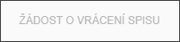
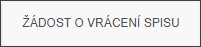

Zobrazování tlačítek
Akční tlačítko reaguje na výběr spisů. Pokud je vybrán jeden spis, pak se zpřístupní možnost vrácení spisu:
Nevybraný spis Jeden vybraný spis Více vybraných spisů

Popis jednotlivých akcí je v následujících položkách.